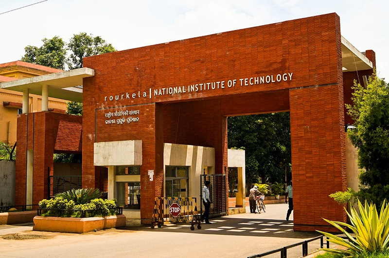

NIT Rourkela (the erstwhile Regional Engineering College, renamed on 26th June 2002) is one of the institutes of national importance under the Ministry of Education, Government of India. The government of India has elevated the Regional Engineering College, Rourkela to an autonomous institution under the name of the National Institute of Technology, Rourkela.
Route from Rourkela Railway Station to NIT Rourkela — approximately 10 km, 20–25 minutes by road.
The nearest railway station is Rourkela (ROU), approximately 10 km from the campus. Auto-rickshaws are readily available, with an approximate fare of ₹150.
The nearest airport is Veer Surendra Sai Airport, Jharsuguda (JRG), approximately 130 km away. Taxis and buses are available from the airport to Rourkela.
NIT Rourkela is well connected by road and is located on the Biju Expressway, providing easy access from major cities.


Accommodation will be provided within the NIT Rourkela campus. Students will be accommodated in the respective hostels, and faculty members will be provided with rooms in the guest house. We strive to ensure a comfortable and pleasant stay for all our attendees.